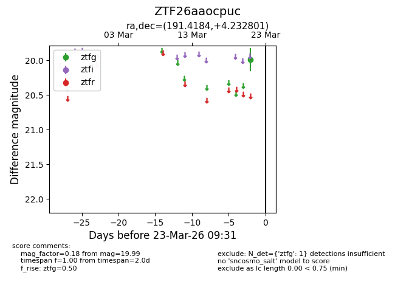
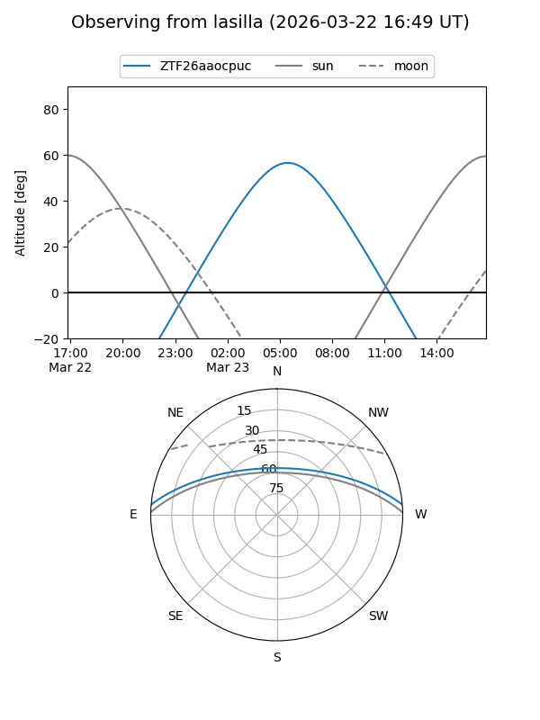
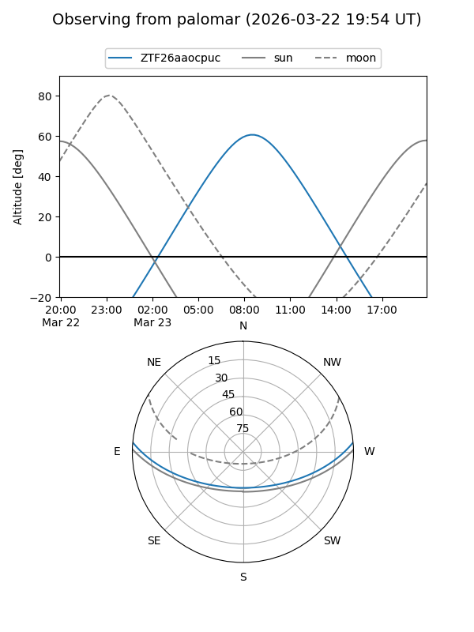

ZTF26aaocpuc
Target ZTF26aaocpuc at 2026-03-23 09:33
Aliases and brokers:
FINK: link
Lasair: link
ALeRCE: link
alt names
ZTF26aaocpuc (ztf,fink_ztf)
Coordinates:
equatorial (ra, dec) = 191.4184,+4.23280
equatorial (HMS+DMS) = 12:45:40.42,+04:13:58.08
galactic (l, b) = (299.2422,+67.06324)
Flags:
Photometry:
last ztfg=19.99
1 ztfg detections
Lightcurve

Visibility


Additional plots